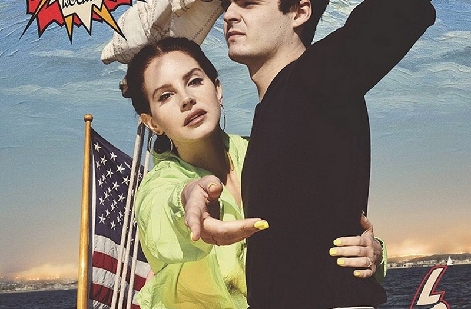

Lana Del Rey
Lana Del Rey reveals new album White Hot Forever will be released in 2020
Artist has just released her latest record 'Norman F***ing Rockwell', which she co-produced with Jack Antonoff

Lana Del Rey new album: Release date and tracklist for ‘Norman F****** Rockwell’ revealed
The artist has unveiled the new record’s Titanic-inspired cover art starring Jack Nicholson’s grandson
Lana Del Rey stars in new Gucci Guilty campaign
Gucci Beauty has released a new short film for their Gucci Guilty fragrance.
Now Hear This: Black Futures, Lana Del Rey, Kano and Ezra Furman
In her weekly column, our music correspondent goes through the best – and worst – releases of the week
Lana Del Rey, George Ezra and Snow Patrol headlining Latitude festival
The two-time winner of the UK Best Major Festival Award takes place in July
Lana Del Rey cancels Israeli music festival performance after backlash
It's important to me to perform in both Palestine and Israel and treat all my fans equally